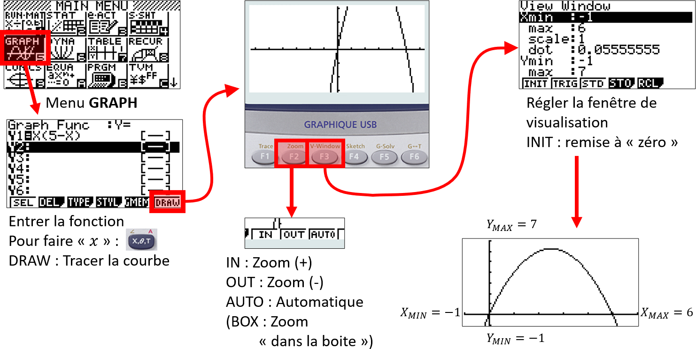

Généralités sur les fonctions
Vocabulaire et notations
Exemple
Avec une ficelle de $10$cm, on fabrique un rectangle.
On désigne par $x$ la longueur d’un côté de ce rectangle.
$~$
-
Calculons l’aire du rectangle lorsque $x=3$
- Longueur = $3$ donc Largeur = $2$ donc l’aire $A=3\times 2=6$
-
Exprimons l’aire du rectangle quelque soit $x$
- Longueur = $x$ donc Largeur = $5-x$ donc l’aire :
$$\begin{aligned}A~&=\text{Long.}\times\text{Larg.}\\~&=x(5-x)\\~&=5x-x^2\end{aligned}$$

$~$
- Caculons quelques valeurs de $A$ pour des valeurs de $x$ :
- Si $x=\cbox{lightblue}1$ alors $A=\cbox{lightblue}1\times (5-\cbox{lightblue}1)=4$
- Si $x=\cbox{lightgreen}2$ alors $A=\cbox{lightgreen}2\times (5-\cbox{lightgreen}2)=6$
- $…$
| $x$ | $0$ | $1$ | $1.5$ | $2$ | $2.5$ | $3$ | $3.5$ | $4$ | $4.5$ | $5$ |
|---|---|---|---|---|---|---|---|---|---|---|
| $x(5-x)$ | $0$ | $4$ | $5.25$ | $6$ | $6.25$ | $6$ | $5.25$ | $4$ | $2.25$ | $0$ |
Ce tableau est appelé un tableau de valeurs.
Pour chaque nombre $x$, on associe un nombre égal à l’aire du rectangle.
- $1\mapsto 4\qquad$ Pour un côté de $1$ cm, on a une aire de $4$ cm$^2$
- $2\mapsto 6\qquad$ Pour un côté de $2$ cm, on a une aire de $6$ cm$^2$
De façon générale, on note : $\quad A :x\mapsto x(5-x)$
Cela se lit : $\qquad$“à $x$, on associe $x(5-x)$”
$~$
$A$ est appelée une fonction. C’est un programme de calcul qui, à un nombre donné, fait correspondre un autre nombre.
- $A$ est le nom de la fonction
- $x$ est le nombre de départ : l’antécédent
- $x(5-x)$ est le nombre d’arrivée : l’image
L’expression de $A$ dépend de la valeur de $x$ donc on note : $\quad A(x)=x(5-x)$
Rem
$A(x)~$se lit “$A$ de $x$”
Définition : Fonction
Def
Soit $\mathcal{D}_f$ un intervalle de $\mathbb{R}$.
Une fonction $f$, définie sur $\mathcal{D}_f$, associe à tout nombre $x$ de $\mathcal{D}_f$, un unique nombre noté $f(x)$.
$\mathcal{D}_f$ est l’ensemble de définition de $f$.
$~$
Notation :
$f:\begin{matrix}\mathcal{D}_f&\mapsto&\mathbb{R}\\x&\mapsto&f(x)\end{matrix}\qquad$ou$\qquad$La fonction $f$ définie sur $\mathcal{D}_f$ tel que $f(x)=…$
Exemple
Dans l’ex. du rectangle, la longueur ne peut pas dépasser $5$cm donc $x\in [0;5]$
On note :
$$A:\begin{matrix}[0;5]&\mapsto&\mathbb{R}\\x&\mapsto&x(5-x)\end{matrix}$$
ou $\quad$”Soit la fonction $A$ définie sur $[0;5]$ tel que $A(x)=x(5-x)$”
Image, antécédent
Exemple
Pour la fonction $~f(x)=x(5-x)~$, on a $\quad f(2.5)=6.25~$ et $~f(1)=4$
On dit que :
- L’image de $2.5$ par la fonction $f$ est $6.25$
- Un antécédent de $6.25$ par la fonction f est $2.5$
Rem
- Un nombre possède une unique image.
- Cependant, un nombre peut posséder plusieurs antécédents.
- Dans l’ex. du rectangle, des antécédents de $5.25$ sont $1.5$ et $3.5$
| $x$ | $\ldots$ | $1.5$ | $\ldots$ | $3.5$ | $\ldots$ |
|---|---|---|---|---|---|
| $A(x)=x(5-x)$ | $\ldots$ | $5.25$ | $\ldots$ | $5.25$ | $\ldots$ |
Methode
Calculer une image ou un antécédent
Soit la fonction $f$ définie sur $\left[0;+\infty\right[$ par $f(x)=\sqrt{x}+1$
- $f(\cbox{pink}{4})=\sqrt{\cbox{pink}{4}}+1=3$
- $f(\cbox{lightgreen}{10.24})=\sqrt{\cbox{lightgreen}{10.24}}+1=4.2$
- $\ldots$
Tableau de valeurs :
| $x$ | $0$ | $4$ | $10.24$ | $16$ | $20.25$ |
|---|---|---|---|---|---|
| $f(x)$ | $1$ | $3$ | $4.2$ | $5$ | $5.5$ |
- L’image de $4$ par $f$ est $…$
- un antécéent de $5$ par $f$ est $…$
- $f: …\mapsto 4.2$
- $f(20.25)=…$
Réponses
- L’image de $4$ par $f$ est $\boxed{3}$
- un antécéent de $5$ par $f$ est $\boxed{16}$
- $f: \boxed{10.24} \mapsto 4.2$
- $f(20.25)=\boxed{5.5}$
Methode
Tableau de valeurs à l’aide de la calculatrice

Représentation graphique
Exemple
Soit $f(x)=x(5-x)$ définie sur $[0;5]$
On peut représenter $f$ à l’aide du tableau de valeurs.
| $x$ | $0$ | $0.5$ | $1$ | $\ldots$ | $2.5$ | $3$ | $\ldots$ | $5$ |
|---|---|---|---|---|---|---|---|---|
| $f(x)$ | $0$ | $2.25$ | $4$ | $\ldots$ | $6.25$ | $6$ | $\ldots$ | $0$ |
Dans un repère, on place les points $(x~;~f(x))$
En reliant les points, on obtient une courbe $\mathcal{C}_f$.
Rem
L’ensemble des points de coordonnées $(x;y)$ avec $y=f(x)$ définissent la courbe représentative de la fonction $f$.
On dira que $y=f(x)$ est l’équation de la courbe.
Methode
Représentation graphique, à l’aide de la calculatrice


Rem
On peut établir un tableau de signes de $f$ à l’aide de $\mathcal{C}_f$ sur $[-1;6]$

Résolution graphique d’équations et d’inéquations
Methode
Résoudre graphiquement une équation du type $f(x)=k$
Soit $f(x)=x(5-x)$
Résoudre l’équation $f(x)=2$, c’est trouver les antécédents de $2$ par $f$.
On détermine les abscisses des points d’intersections de $\mathcal{C}_f$ avec la droite parallèle à l’axe des abscisses passant par le point $(0;2)$.
On peut “lire” 2 solutions : $0.5$ et $4.5$
$$\begin{aligned}f(x)=2~&\Leftrightarrow x(5-x)=2\\~&\Leftrightarrow\begin{cases}x_1\approx 0.5\\x_2\approx 1.5\end{cases}\end{aligned}$$
Interprétation :
Le rectangle de dimensions $0.5$cm sur $4.5$cm possède une aire d’environ $2$cm$^2$.
- Aire pour $x=0.5$ : $\qquad 0.5(5-0.5)=0.5\times 4.5=2.25\approx 2$
- Aire pour $x=4.5$ : $\qquad 4.5(5-4.5)=4.5\times 0.5=2.25\approx 2$
Une lecture graphique est rarement exacte.
Rem
- Par lecture graphique, les solutions obtenues sont approchées. (sauf cas particulier)
- L’équation $f(x)=7$ n’a pas de solution car la droite ne coupe pas la courbe.
- Graphiquement, on ne peut pas être certain que les solutions qui apparaissent sont les seules. Il pourrait y en avoir d’autres au-delà des limites de la représentation graphique tracée.
Methode
Résoudre graphiquement une équation du type $f(x)=g(x)$
On considère les fonctions $f$ et $g$ définie sur $\mathbb{R}$ par :
- $f(x)=x^2+2$
- $g(x)=-x^2+3x+2$
Pour déterminer les solutions de l’équation $f(x)=g(x)$, il suffit de lire l’abscisse des points d’intersection de $\Cf$ et $\Cg$.
Graphiquement l’équation $f(x)=g(x)$ admet pour solutions :
$$x_1=0\quad\text{et}\quad x_2=1.5$$
Vérification :
- Pour $x=0$ :
- $f(0)=0^2+2=2$
- $g(0)=-0^2+3\times 0+2=2$
- $f(0)=g(0)\qquad$donc $0$ est solution
- Pour $x=1.5$ :
- $f(1.5)=1.5^2+2=4.25$
- $g(1.5)=-1.5^2+3\times 1.5+2=4.25$
- $f(1.5)=g(1.5)\qquad$donc $1.5$ est solution
Methode
Résoudre graphiquement une équation du type $f(x)\le g(x)$
- Pour résoudre de l’inéquation $f(x)\le g(x)$, il faut déterminer l’ensemble des valeurs de $x$ pour lesquelles $\mathcal{C}_f$ se trouve au-dessous de $\mathcal{C}_g$
On lit graphiquement que l’inéquation $f(x)\le g(x)$ admet pour solution l’intervalle $[0;1,5]$
$$f(x)\le g(x)~\Leftrightarrow~x\in[0;1,5]$$